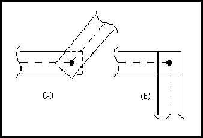
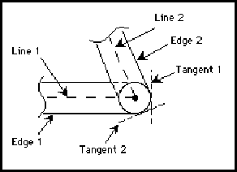

connectivityFrameStructureNameDef ::= nameDef
ConnectivityFrameStructureNameDef is a name definition for a connectivityFrameStructure.
connectivityNet ::= '(' 'connectivityNet'
interconnectNameDef
signalRef
interconnectHeader
connectivityNetJoined
{ comment | connectivitySubNet | userData }
')'
connectivityFrameStructure connectivityStructure
A connectivityNet is a structured representation of connectivity. Structural connectivity allows the ordering of ports to be described and makes an association between signals, ports and rippers. Each connectivityNet is associated with a single signal and with single bit ports.
Each of the ports referenced in a connectivityNet must also be referenced by the signal which corresponds with the connectivityNet.
The connectivitySubNets within a connectivityNet provide further information on the structure of the connectivity.
(connectivityNet NET1 (signalRef SIG1)
(interconnectHeader ...)
(connectivityNetJoined
(portJoined
(portRef MP1)
(portInstanceRef P1 (instanceRef I1)))
(connectivityRipperRef ...)
...)
...)
This example defines a connectivityNet called NET1, which gives the structural connectivity for all or part of the signal SIG1.
connectivityNetJoined ::= '(' 'connectivityNetJoined'
( portJoined | joinedAsSignal )
{ connectivityRipperRef }
')'
connectivityNet connectivitySubNet
ConnectivityNetJoined lists all the ports and rippers that are connected to the net or subnetIt is analogous to connectivityBusJoined in bus.
The items referenced in portJoined within connectivityNetJoined must also be referenced in the corresponding signalJoined.
When used within connectivitySubNet, the connectivityNetJoined must be a subset of the connectivityNetJoined of the immediately-enclosing net or subnet.
(connectivityNetJoined
(portJoined
(portRef MP1)
(portInstanceRef P1 (instanceRef I1)))
(connectivityRipperRef J1)
...)
This connectivityNetJoined indicates that the master port MP1, the ripper J1 and the instance port P1 are connected into this net.
schematicNetJoined schematicBusJoined signalJoined connectivityBusJoined
connectivityRipper ::= '(' 'connectivityRipper'
connectivityRipperNameDef
')'
connectivityFrameStructure connectivityStructure
A connectivityRipper is an object used in a connectivity view to associate a connectivity bus, bus slice or subbus with other connectivity busses, subbusses, bus slices, nets or subnets.
The connectivityRipper construct gives a name for the ripper. Association between the connectivityRipper and its nets or busses is defined in the connectivityBusJoined and connectivityNetJoined constructs, which may reference a particular connectivityRipper.
For level 0, each interconnect associated with a ripper must have at least one common signal with at least one other interconnect associated with the same ripper.
For level 0, connectivityRipper must be referenced by at least one connectivity bus.
(connectivityRipper I1) (connectivityRipper I2)
This example shows two different rippers, with names I1 and I2.
connectivityRipperNameDef ::= nameDef
ConnectivityRipperNameDef is the name of a connectivity ripper.
connectivityRipperNameRef ::= nameRef
ConnectivityRipperNameRef is a reference to a connectivityRipperNameDef.
connectivityRipperRef ::= '(' 'connectivityRipperRef'
connectivityRipperNameRef
')'
connectivityBusJoined connectivityNetJoined
ConnectivityRipperRef is used to reference a connectivityRipper.
(connectivityRipperRef I1)
This example shows a reference to a connectivityRipper whose name is I1.
connectivityStructure ::= '(' 'connectivityStructure'
{ comment | connectivityBus | connectivityFrameStructure | connectivityNet
| connectivityRipper | localPortGroup | timing | userData }
')'
ConnectivityStructure is used to describe the structural connectivity for a connectivityView.
Logicalconnectivity describes which ports are connected together, in terms of signals, and structural connectivity describes the structure of that connectivity.
ConnectivityView has no implementation section because there is no graphical implementation of a connectivity view.
(connectivityStructure (connectivityRipper I1) (connectivityNet NET1 ...) (connectivityNet NET2 ...) (connectivityNet NET3 ...) (connectivityBus BUS1 ...) ...)
connectivitySubBus ::= '(' 'connectivitySubBus'
interconnectNameDef
interconnectHeader
connectivityBusJoined
{ comment | connectivityBusSlice | connectivitySubBus | userData }
')'
connectivityBus connectivityBusSlice connectivitySubBus
A connectivitySubBus provides further structural information about the connectivity of the connectivityBus, connectivityBusSlice or connectivitySubBus that contains it. It is analogous to connectivitySubNet in connectivityNet.
The ports and rippers referenced in the connectivityBusJoined of a connectivitySubBus must be referenced in the connectivityBusJoined of the immediately-containing connectivityBus, connectivityBusSlice or connectivitySubBus.
The width of a subbus is the same as the enclosing bus slice or bus.
(connectivityBus A (signalGroupRef A)
(interconnectHeader ...)
(connectivityBusJoined
(portJoined (portRef MP1) (portRef MP2)) ...)
...
(connectivitySubBus S1
(interconnectHeader ...)
(connectivityBusJoined
(portJoined (portRef MP1)) ...) ...)
(connectivitySubBus S2
(interconnectHeader ...)
(connectivityBusJoined
(portJoined (portRef MP2)) ...) ...))
In this example, the bus A has two subbusses. The first, S1, joins the master port MP1 and the second, S2, joins the master port MP2.
connectivitySubNet ::= '(' 'connectivitySubNet'
interconnectNameDef
interconnectHeader
connectivityNetJoined
{ comment | connectivitySubNet | userData }
')'
connectivityNet connectivitySubNet
A connectivitySubNet provides further structural information about the connectivity of the connectivityNet or connectivitySubNet that contains it.
The ports and rippers referenced in a connectivitySubNet must be referenced in the connectivityNetJoined of the immediately-containing connectivityNet or connectivitySubNet.
(connectivityNet NET1 (signalRef SIG1)
(interconnectHeader ...)
(connectivityNetJoined
(portJoined (portRef MP1)
(portInstanceRef P1 (instanceRef I1)))
...)
(connectivitySubNet SUBNET1
(interconnectHeader ...)
(connectivityNetJoined
(portJoined (portRef MP1))) ...)
(connectivitySubNet SUBNET2
(interconnectHeader ...)
(connectivityNetJoined
(portJoined (portInstanceRef P1
(instanceRef I1))) ...)
...)
...)
In this example, the connectivity of the connectivityNet is described by two subnets, SUBNET1 and SUBNET2
connectivityTagGenerator ::= '(' 'connectivityTagGenerator'
stringExpression
')'
ConnectivityTagGenerator defines how a connectivity tag is to be generated. During hierarchy expansion, stringExpression is evaluated to create the name of a connectivity tag to be associated with the enclosing signal. All signals in a view which have the same connectivity tag are implicitly connected, after design expansion.
Within the immediate context of a view or frame, no two connectivityTagGenerators may have the same stringExpression.
The connectivityTagGenerator construct allows you to express parametric connectivity.
(signal abc ...
(connectivityTagGenerator
(stringConcatenate "node"
(stringParameterRef nodeName))) ...)
Here, the connectivity tag name has been constructed by concatenating "node" with the value of nodeName, which is a stringParameter.
(signal SIG1 ...
(signalWidth (integerParameterRef N))
(connectivityTagGenerator
(stringConcatenate "DATA_"
(decimalToString (signalIndexValue)))) ...)
Here, the connectivity tag name has been constructed by concatenating "DATA" with the value of the signal index, which will vary for each signal during expansion. The following connectivity tags would be generated if parameter N has the value 4: "DATA_0", "DATA_1", "DATA_2", and "DATA_3".
instanceNameGenerator signalIndexValue
connectivityTagGeneratorDisplay ::= '(' 'connectivityTagGeneratorDisplay'
{ display }
')'
interconnectAttachedText schematicInterconnectAttributeDisplay
ConnectivityTagGeneratorDisplay provides display information to display the connectivityTagGenerator. The manner in which a string expression is displayed is system dependent. The connectivityTagGenerator that is displayed is the one on the signal associated with the interconnect.
(signal SIG1 (signalJoined ...)
(signalWidth (integerParameterRef WIDTH))
(connectivityTagGenerator
(stringConcatenate "SIG1_"
(decimalToString (signalIndexValue)))))
...
(schematicNet SIG1_NET (signalRef SIG1) ...
(schematicInterconnectAttributeDisplay
(connectivityTagGeneratorDisplay
(display FIG1 (transform ...)))))
In this example the connectivityTagGenerator for signal SIG1 is displayed.
connectivityUnits ::= '(' 'connectivityUnits'
{ <setCapacitance> | <setTime> }
')'
connectivityViewHeader physicalScaling
ConnectivityUnits defines the units for connectivityView. It may be specified as a default for the entire data in edifHeader, for a library in libraryHeader, or for a particular view in connectivityViewHeader.
(edif edif_file
(edifVersion 3 0 0)
(edifHeader (edifLevel 0)
(keywordMap (k0KeywordLevel))
(unitDefinitions
(unit mm 1 (e 1 -3) (meter 1))
(unit pF 1 (e 1 -12) (farad 1))
(unit nF 1 (e 1 -9) (farad 1))
(unit nanoSec 1 (e 1 -9) (second 1)))
(fontDefinitions ...)
(physicalDefaults ...)
(physicalScaling
(connectivityUnits
(setCapacitance (unitRef pF))
(setTime (unitRef nanoSec)))
...))
(library LIB1
(libraryHeader (edifLevel 0)
(nameCaseSensitivity)
(technology
(physicalScaling
(connectivityUnits
(setCapacitance (unitRef nF))))
...) ...)
(cell CELL1 (cellHeader ...)
(cluster CL1 (interface ...) ...
(connectivityView VIEW1
(connectivityViewHeader
(connectivityUnits
(setCapacitance (unitRef pF))))
...)))))
In this example, unit definitions for mm, pF, nF and nanoSec are defined in the edifHeader. ConnectivityUnits are defined as pF for capacitance and nanoSec for time, and this will apply, unless overridden, to all connectivity views within this edif file.
Within LIB1, connectivityUnits are defined as nF for capacitance, and this will override the definition of setCapacitance in the edifHeader, so within LIB1 all capacitance values within connectivity views will be in nF. This may be overridden at the view level, as in view VIEW1, which resets capacitance values to be in pF.
documentationUnits interfaceUnits logicModelUnits maskLayoutUnits pcbLayoutUnits schematicUnits symbolicLayoutUnits
connectivityView ::= '(' 'connectivityView'
viewNameDef
connectivityViewHeader
logicalConnectivity
connectivityStructure
{ comment | userData }
')'
ConnectivityView describes the electrical connectivity of a cell. In addition, structure may be defined in order to allow attributes, such as interconnect criticality, to be represented.
(connectivityView VIEW_1
(connectivityViewHeader ...)
(logicalConnectivity
(instance ...)
(signal ...) ...)
(connectivityStructure ...))
logicModelView schematicSymbol schematicView
connectivityViewHeader ::= '(' 'connectivityViewHeader'
connectivityUnits
{ <derivedFrom> | documentation | <nameInformation> |
<previousVersion> | property | <status> }
')'
ConnectivityViewHeader contains data that relates to the view as a whole.
(connectivityViewHeader (connectivityUnits (setTime (unitRef ms))) (status ...) (documentation ...) ...)
cellHeader clusterHeader documentationHeader edifHeader geometryMacroHeader interconnectHeader libraryHeader pageHeader schematicSymbolHeader schematicTemplateHeader schematicViewHeader
constantNameDef ::= nameDef
booleanConstant integerConstant stringConstant
The constantNameDef is the name of a booleanConstant, integerConstant or stringConstant.
(booleanConstant fastCircuit (true))
Here, the booleanConstant named fastCircuit is being defined.
constantNameRef ::= nameRef
booleanConstantRef integerConstantRef stringConstantRef
ConstantNameRef is an identifier used to refer to a booleanConstant, integerConstant or stringConstant.
(condition (booleanConstantRef fastCircuit))
Here, the constantNameRef is fastCircuit.
constantValues ::= '(' 'constantValues'
{ booleanConstant | integerConstant | stringConstant }
')'
The constantValues construct is used to specify all constant definitions within the edifHeader.
(edifHeader (edifLevel 0)
(keywordMap (k0KeywordLevel))
(unitDefinitions ...)
(fontDefinitions ...)
(physicalDefaults ...)
(constantValues
(booleanConstant fastCircuit (true))
(integerConstant fullWordLength 32) ...)
...)
Here, the edifHeader contains twoconstant definitions.
contract ::= '(' 'contract'
stringToken
')'
Contract identifies the contract associated with the drawing. Contract means all types of agreements and orders for the procurement of supplies or services.
(contract "91/1010")
approvedDate companyName originalDrawingDate drawingDescription drawingIdentification drawingSize engineeringDate pageIdentification revision pageTitle
contractDisplay ::= '(' 'contractDisplay'
( addDisplay | replaceDisplay | removeDisplay )
')'
pageTitleBlockAttributeDisplay
ContractDisplay is used to define display positions for contract. When used in the context of pageTitleBlock, it may add, replace or remove displays. Within the context of a template definition, only addDisplay may be used.
copyright ::= '(' 'copyright'
year
{ stringToken }
')'
Copyright is used to indicate to the reader any copyright restrictions on the use of the EDIF data or of a particular object within the file, depending on the context of the use of status.
The stringTokens are the copyright owners.
(copyright
(year 1992)
"Electronic Industries Association")
copyrightDisplay ::= '(' 'copyrightDisplay'
( addDisplay | replaceDisplay | removeDisplay )
')'
pageTitleBlockAttributeDisplay
CopyrightDisplay is used to define display positions for copyright. When used in the context of pageTitleBlock, it may add, replace or remove displays. Within the context of a template definition, only addDisplay may be used.
cornerType ::= '(' 'cornerType'
( truncate | round | extend )
')'
figureGroup figureGroupOverride
CornerType specifies the type of corners of paths associated with a figure group. It encloses one of three possible values which are extend, truncate and round. The default is truncate. The corners are formed by two consecutive segments of the same path.
If cornerType is used in figureGroup in the technology section of a library, the specified corner type is the default corner type to be used for all path and openShape corners in the figure group. CornerType may also be specified in figureGroupOverride within the figure itself to override the default corner type.
In all cases, the inside of a corner is formed by a single point when the expansion of the two edges meet. For cornerType round, an arc with a radius of half the value of the associated pathWidth forms the outer corner. Such specifications are not universally acceptable for mask layout descriptions.
EndType and cornerType apply to cases in which one or two arcs are used, by using the tangents to those arcs (at the point of intersection) in the role of the simple center-lines referred to in the above definitions.
Corner -Type round
If the corner forms an obtuse angle, both the remaining cornerTypes specify an outer corner with a single point.

Corner-Type extend for obtuse angles
For acute angles, truncate produces an additional edge which joins the two points that would have been produced by endType extend applied to each edge separately. For example, this generates the "stop sign" or an octagonal corner for a right angle.

Corner-Type truncate
The final case is the outer expansion of an acute angled corner with cornerType extend. This specifies the addition of two extra symmetrical line segments at the corner. They should be perpendicular to the original center line edges and be within the two edges that would have been produced by endType extend applied to each edge separately. These are indicated as tangent 1 and tangent 2 in the following figure.

Corner-Type extend for acute angles.
(figureGroup Metal
(cornerType (extend))
(comment "specifies a default corner type of
extend")
(pathWidth 10))
...
(figure
(figureGroupOverride Metal
(cornerType (truncate))
(comment "override default corner type"))
...)
This example shows the definition of Metal with a defined cornerType of extend, and the local change to truncate within a figure statement.
coulomb ::= '(' 'coulomb'
unitExponent
')'
Coulomb is used to specify a user-defined unit in terms of the SI unit of electric charge, coulomb. See unit for examples of the definition of units.
ampere candela celsius degree fahrenheit farad henry hertz joule kelvin kilogram meter mole ohm radian second siemens volt watt weber
criticality ::= '(' 'criticality'
integerValue
')'
interconnectAnnotate interconnectHeader schematicInterconnectHeader schematicSubInterconnectHeader
The criticality attribute is used to describe the relative importance of an interconnect in comparison with other interconnects, for routing purposes. The integer may be positive or negative. An interconnect with a low value for its criticality is given a lower priority for routing purposes than an interconnect with a higher value for its criticality. If the criticality of an interconnect is not specified, the default is zero.
(connectivityNet CLOCK (signalRef SIG1) (interconnectHeader (criticality 100)) (connectivityNetJoined ...) ...) (connectivityNet LSSD (signalRef SIG2) (interconnectHeader (criticality -50)) (connectivityNetJoined ...) ...)
In this example, connectivity net LSSD is declared to be less critical than connectivity net CLOCK, and also less critical than any interconnects that do not have a specified criticality value.
criticalityDisplay ::= '(' 'criticalityDisplay'
{ display }
')'
interconnectAttachedText schematicInterconnectAttributeDisplay
CriticalityDisplay is used to define display positions for criticality.
currentMap ::= '(' 'currentMap'
currentValue
')'
CurrentMap is an attribute of a logic value which is used to specify its electrical characteristics. CurrentMap gives a value or range of values to specify what the accepted current values are for the given logic value. The value is expressed in units defined by setCurrent.
A logic value associated with a positive current indicates conventional current flow into a cell when observed on a port. When the same logic value is assigned to a port, this indicates conventional current flowing out of the cell. Reverse flows are specified by a negative value used within currentMap.
(setCurrent (unitRef mA))
...
(logicDefinitions ...
(logicValue T
(currentMap (e 2 -1))))
In the above example, the accepted current for the logic value T is defined to be 0.2 mA. Since this is positive, it implies current flow from an input port or to an output port.
logicDefinitions setCurrent voltageMap
currentValue ::= miNoMaxValue
A value for current measured in units defined by setCurrent.
curve ::= '(' 'curve'
{ arc | pointValue }
')'
Curve contains an ordered list of points intermingled with arcs. A point preceding an arc forms a line segment with the first point specified within the arc. A point following an arc forms a line segment with the last point specified by the arc within figures. Two or more points in sequence represent one or more line segments.
A final line segment from the last point to the first point is automatically obtained in the context of the shape figure.
(shape
(curve
(pt 20 100)
(arc
(pt 40 100)
(numberPoint 50 110)
(pt 40 120))
(pt 20 120)))
This example consists of one arc from (40, 100) through (50, 110) to (40, 120) and three straight line segments - from (40, 120) to (20, 120), from (20, 120) back to (20, 100), and from (20, 100) to (40, 100). This is illustrated in the figure below.

dataOrigin ::= '(' 'dataOrigin'
stringToken
{ <version> }
')'
DataOrigin identifies the actual location where a particular part of the EDIF data was created, and its local version identification. This may be as specific or as general as required, identifying a particular office or an entire country. DataOrigin is intended for human interpretation and should serve as an aid for problem analysis. The version is nested within dataOrigin, as the conventions for data versions are taken to be specific to each location.
(dataOrigin "EDIF Inc., Santa Clara Division" (version "12-A5"))
This identifies the Santa Clara Division of EDIF Inc., a fictitious company, as the source of the data. The local version identification is "12-A5".
author program status timeStamp
date ::= '(' 'date'
yearNumber
monthNumber
dayNumber
')'
approvedDate checkDate engineeringDate originalDrawingDate timeStamp
Date specifies the date as three integers representing the year, month and day. These should be consistent with each other to form a valid date.
(date 1992 4 29)
This example represents the date April 29th 1992.